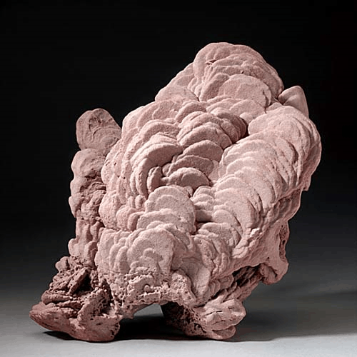
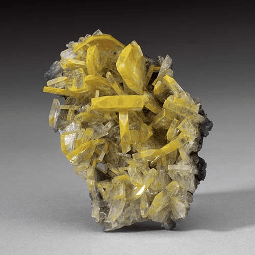
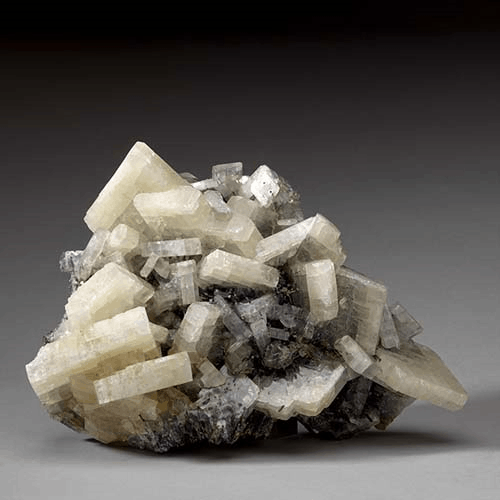

Barite (Baryte) - BaSO4
Sulfates




Habit: Colorless if pure; may be white, pale shades of gray, yellow or red to reddish brown. Crystals typically pseudo-cubic or tabular with flat vicinal rhombohedra to 1 cm; also fibrous to columnar and porcelaneous, commonly granular to dense massive. Vitreous, somewhat pearly luster; transparent to translucent. White streak.
Environment: Forms in recent or tertiary clays, marls and lignites by the action of sulfate solutions, derived from the alteration of pyrite or marcasite, on aluminous silicates.
Etymology: From alumen, the Latin word for alum.